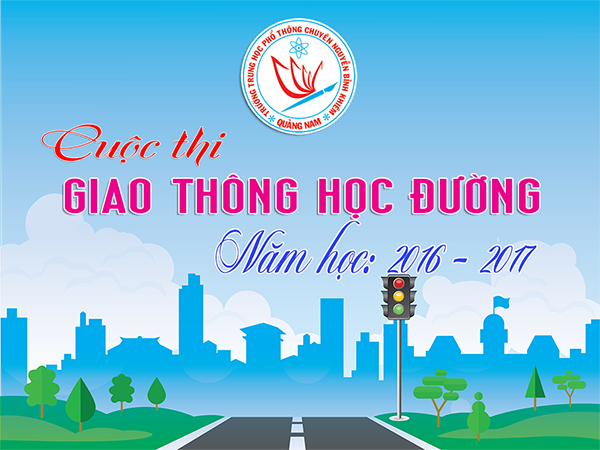

Về việc tham gia cuộc thi Giao thông học đường năm học 2016 - 2017

Lần cập nhật cuối lúc Thứ hai, 21 Tháng 11 2016 10:09 Viết bởi Administrator Thứ hai, 21 Tháng 11 2016 08:43
Thực hiện công văn số 5402/BGDĐT-CTHSSV, ngày 02 tháng 11 năm 2016 của Bộ Giáo dục và Đào tạo về tổ chức cuộc thi "Giao thông học đường" năm học 2016-2017;
Sở Giáo dục và Đào tạo đề nghị Trưởng Phòng Giáo dục và Đào tạo, Hiệu trưởng các trường THPT, PTDTNT tổ chức cho học sinh tham gia cuộc thi với các nội dung cụ thể như sau:

1. Thời gian: Từ tháng 11/2016 đến ngày 25/04/2017.
2. Đối tượng: Học sinh THCS, THPT trên địa bàn tỉnh
3. Hình thức tổ chức: Thi trắc nghiệm, tham gia thi trực tuyến trên Internet tại địa chỉ: http://giaothonghocduong.com.vn hoặc Egame.vn, cuộc thi diễn ra qua 03 vòng: Vòng thi cấp trường, vòng thi cấp tỉnh, thành phố và vòng thi toàn quốc. Vòng thi toàn quốc sẽ được tổ chức thi tập trung tại địa điểm do Ban tổ chức lựa chọn và kết hợp cùng Lễ trao giải tổng kết cuộc thi.
4. Hình thức thi:
- Thi trắc nghiệm – Tham gia thi trực tuyến trên Internet tại địa chỉ duy nhất của cuộc thi: http://giaothonghocduong.com.vn hoặc http://Egame.vn.
- Cuộc thi diễn ra qua 03 vòng: Vòng thi trường, vòng thi cấp tỉnh và vòng thi toàn quốc.
- Vòng thi toàn quốc sẽ tổ chức thi tập trung tại Hà Nội kết hợp cùng Lễ trao giải tổng kết cuộc thi.
5. Nội dung: Mỗi bộ câu hỏi được bố cục gồm 3 phần nội dung:
- Về kiến thức: Quy định của pháp luật khi tham gia giao thông; kiến thức cơ bản về an toàn giao thông đường bộ; một số hiểu biết về công trình giao thông đường bộ, phương tiện tham gia giao thông đường bộ.
- Về kỹ năng: Tham gia giao thông an toàn; xử lý tình huống giao thông; điều khiển phương tiện giao thông; khắc phục hậu quả và giải quyết tai nạn giao thông.
- Về ứng xử văn hóa: Khi tham gia giao thông; chấp hành luật và tuyên truyền về pháp luật giao thông.
II. CÁCH THỨC THAM GIA
1. Cách thức dự thi
1.1. Đăng ký dự thi
- Thí sinh tạo tài khoản dự thi cá nhân tại trang web http://Egame.vn. Hoặc http://giaothonghocduong.com.vn
- Mỗi thí sinh chỉ được sử dụng duy nhất 01 tài khoản trong suốt thời gian tham gia cuộc thi. Trong trường hợp bất kỳ thông tin nào của thí sinh đã được đăng ký trong hệ thống bị sai lệch so với thực tế Ban Tổ chức sẽ không công nhận kết quả thi của thí sinh đó.
- Khi thi tập trung tại cấp toàn quốc, các thí sinh có mặt và hoạt động theo lịch trình của Ban tổ chức, khi đi mang theo bản sao giấy khai sinh hoặc CMND, giấy xác nhận có đóng dấu của nhà trường (mẫu giấy xác nhận được đăng tải trên website: http://giaothonghocduong.com.vn hoặc http://Egame.vn).
1.2. Cách thức dự thi
- Thí sinh thi online trên website: http://giaothonghocduong.com.vn hoặc http://Egame.vn.
- Thí sinh tham gia trả lời 35 câu hỏi, thời gian tối đa cho mỗi câu hỏi là 30 giây.
- Hệ thống sẽ tự động ghi nhận kết quả và cập nhật trên website.
- Thí sinh nào có số điểm hoàn thành phần thi cao nhất sẽ giành chiến thắng. Số điểm tối đa cho 1 lần thi là 350 điểm (10 điểm/ 01 câu trả lời đúng).
- Trường hợp các thí sinh có số điểm hoàn thành bằng nhau sẽ xét thời gian về đích. Thí sinh nào có thời gian về đích nhanh hơn sẽ giành chiến thắng.
1.4. Quy trình dự thi
* Vòng thi cấp trường
- Vòng thi cấp trường bao gồm 10 tuần thi liên tiếp. Từ ngày 07/11/2016 đến ngày 26/02/2017
- Mỗi tuần thi bắt đầu từ 09h00 ngày thứ 2, kết thúc vào lúc 17h00 ngày chủ nhật của tuần đó.
- Thời gian cụ thể mỗi tuần:
• Tuần 1: Từ 07/11/2016 đến 13/11/2016
• Tuần 2: Từ 14/11/2016 đến 20/11/2016
• Tuần 3: Từ 21/11/2016 đến 27/11/2016
• Tuần 4: Từ 28/11/2016 đến 04/12/2016
• Tuần 5: Từ 05/12/2016 đến 11/12/2016
• Tuần 6: Từ 12/12/2016 đến 18/12/2016
• Tuần 7: Từ 09/01/2017 đến 15/01/2017
• Tuần 8: Từ 06/02/2017 đến 12/02/2017
• Tuần 9: Từ 13/02/2017 đến 19/02/2017
• Tuần 10: Từ 20/02/2017 đến 26/02/2017
- Mỗi thí sinh được phép dự thi 01 lần/tuần và được tham gia thi tất cả các tuần.
- Kết quả hàng tuần được hiển thị ngay sau thời gian thi của tuần đó kết thúc.
- Sau 10 tuần thi, mỗi trường sẽ chọn 01 thí sinh có điểm thi cao nhất trong 10 tuần thi để tham gia vòng thi cấp tỉnh/thành phố. Trong trường hợp thí sinh có điểm thi bằng nhau sẽ xét tiêu chí thời gian hoàn thành phần thi. Thí sinh nào có thời gian hoàn thành phần thi nhanh hơn sẽ được xếp thứ hạng cao hơn. Kết quả sẽ được công bố trên website: http://giaothonghocduong.com.vn hoặc http://Egame.vn.
*Vòng thi cấp tỉnh
- Mỗi thí sinh sẽ được thi 01 lần duy nhất.
- Thời gian: từ ngày 27/02/2017 đến ngày 27/03/2017, các thí sinh của mỗi trường thi online tại nhà hoặc trường học. Thí sinh dự thi theo lịch thi của mỗi tỉnh/thành phố tương ứng.
- Lịch vòng thi cấp tỉnh/thành phố của mỗi tỉnh/thành phố sẽ được thông báo cụ thể trên website cuộc thi và văn bản của Ban Tổ chức.
- Kết quả sẽ được công bố trên website: http://giaothonghocduong.com.vn hoặc http://Egame.vn
- Tỉnh Quảng Nam sẽ chọn 02 thí sinh đạt giải cao nhất mỗi cấp tham gia vòng thi toàn quốc.
*Vòng thi cấp toàn Quốc
- Các thí sinh thi tập trung tại địa điểm thi.
- Tổ chức thi online đề chung, chia bảng và có sự giám sát của Ban tổ chức.
- Thời gian: tháng 4/2017.
- Ban tổ chức có thể bổ sung thêm vòng thi phụ.
III. CƠ CẤU GIẢI THƯỞNG
Cơ cấu giải thưởng tính theo từng cấp học cụ thể
1. Vòng thi cấp trường
- Giải thưởng tuần: 07 giải/tuần, mỗi giải trị giá 300.000 đồng.
2. Vòng thi cấp tỉnh/thành phố
+ 01 giải Nhất, mỗi giải trị giá 1.000.000 đồng
+ 01 giải Nhì, mỗi giải trị giá 500.000 đồng
+ 01 giải Ba, mỗi giải trị giá 300.000 đồng
3. Vòng thi cấp toàn quốc
+ 01 Giải Đặc biệt, giải trị giá 10.000.000 đồng
+ 02 giải Nhất, mỗi giải trị giá 5.000.000 đồng
+ 03 giải Nhì, mỗi giải trị giá 3.000.000 đồng
+ 05 giải Ba, mỗi giải trị giá 2.000.000 đồng
4. Giải thưởng tập thể
Có 20 giải tập thể đồng hạng cho 20 tập thể gồm trường, Sở Giáo dục và Đạo tạo, và Ban An toàn giao thông các tỉnh, thành phố - Mỗi giải trị giá: 2.000.000 VNĐ.
Các cá nhân và tập thể trong diện được nhận giải có trách nhiệm theo dõi và chấp hành các quy định về thủ tục nhận giải thưởng qua các văn bản hướng dẫn của BTC và trên website: http://giaothonghocduong.com.vn hoặc http://Egame.vn.
5. Giải thưởng phụ
Giải thưởng chính và các giải thưởng phụ có thể được bổ sung tùy theo tình hình thực tế trong việc huy động các nguồn lực xã hội hóa.
6. Thành lập Ban tổ chức thi các trường
- Đề nghị Hiệu trưởng các trường có quyết định thành lập Ban tổ chức thi cấp trường.
- Ban tổ chức thi cấp trường cần thường xuyên theo dõi các thông báo của Ban Tổ chức cấp toàn quốc tại mục “Tin báo Ban Tổ chức” trên website http://giaothonghocduong.com.vn để có thông tin kịp thời về cuộc thi.
7. Tiến độ thực hiện
- Thời gian phát động cuộc thi: trong tháng 11 năm 2016
- Thực hiện cuộc thi từ tháng 11 năm 2016 đến hết tháng 4 năm 2017
- Báo cáo kết quả thực hiện: đợt 1vào ngày 25/12/2016; đợt 2 vào ngày 05/4/2017
Để tổ chức cuộc thi được thuận lợi, đạt hiệu quả cao và thu hút đông đảo học sinh tham gia trong năm học 2016-2017, Sở Giáo dục và Đào tạo đề nghị các Trưởng Phòng Giáo dục và Đào tạo chỉ đạo các trường trung học cơ sở, Hiệu trưởng trường THPT, PTDTNT tuyên truyền về mục đích, ý nghĩa và tạo điều kiện cho học sinh tham gia cuộc thi.
- 06/07/2017 15:55 - Hướng dẫn tra cứu điểm thi và phúc khảo bài thi và…
- 05/07/2017 08:24 - Hướng dẫn thí sinh thực hành điều chỉnh nguyện vọn…
- 29/04/2017 08:00 - Ninh Bình 2017 - Hành trình chinh phục những đỉnh …
- 04/03/2017 16:05 - Kết quả cuộc thi Olympic đi du học Nga môn Vật lý …
- 16/12/2016 08:45 - Thư ngỏ gửi các em cựu học sinh trường THPT Chuyên…
- 11/11/2016 08:06 - Thiết kế xây dựng tượng cụ Nguyễn Bỉnh Khiêm
- 06/10/2016 07:35 - Đề thi minh họa kỳ thi THPT quốc gia năm 2017
- 29/09/2016 00:00 - Hội nghị Sơ kết thực hiện đề án phát triển hệ thốn…
- 08/09/2016 00:00 - Lễ ký kết hợp tác giữa Trường THPT Chuyên Nguyễn B…
- 04/06/2016 07:51 - Danh sách thí sinh thi tuyển sinh 10 THPT Chuyên n…